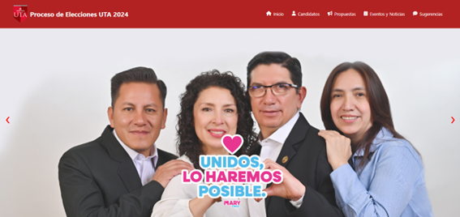
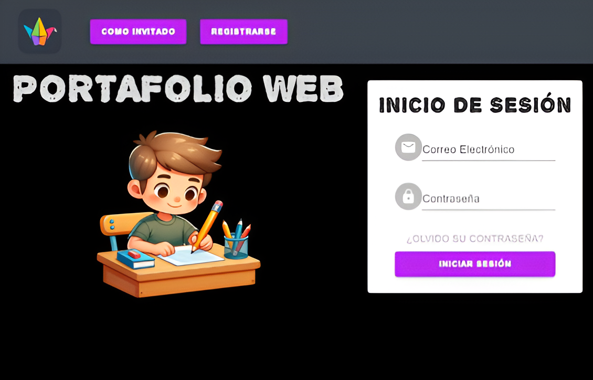
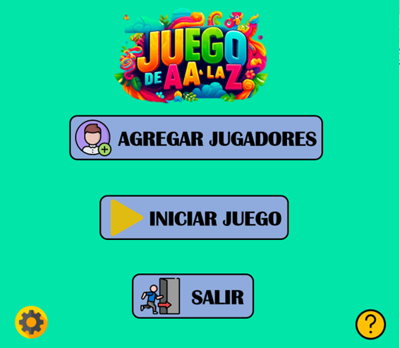

<link rel="stylesheet" href="proyectos.css">

<!-- Sección de Proyectos -->
<section id="proyectos">
    <h2>Proyectos</h2>
    <div class="proyecto-container">
        <div class="proyecto-item">
            
            <h3>Proyecto 1: Pagina_Web</h3>
            <p>Este proyecto se enfoca en una página web que proporciona información detallada sobre los candidatos a las elecciones de la UTA 2024, incluyendo datos y antecedentes de cada candidato.</p>
            <a href="https://github.com/Leo538/Pagina_Web" target="_blank" class="proyecto-link">Ver en GitHub</a>
        </div>
    </div>
    
    <div class="proyecto-item">
        
        <h3>Proyecto 2: Laminet</h3>
        <p>Laminet es un blog personal donde los usuarios pueden subir y comentar proyectos, fomentando la colaboración y el intercambio de ideas.</p>
        <a href="https://github.com/Leo538/Proyect-Laminet" target="_blank" class="proyecto-link">Ver en GitHub</a>
    </div>
    
    <div class="proyecto-item">
        
        <h3>Proyecto 3: Estructura de Datos 2</h3>
        <p>Este proyecto está orientado a la venta de tiquetes de bus, utilizando estructuras de datos como pilas y colas para manejar la lógica del sistema de ventas.</p>
        <a href="https://github.com/ArielParedesLozada/Estructura-de-Datos-2" target="_blank" class="proyecto-link">Ver en GitHub</a>
    </div>
    
    </div>
</section>
